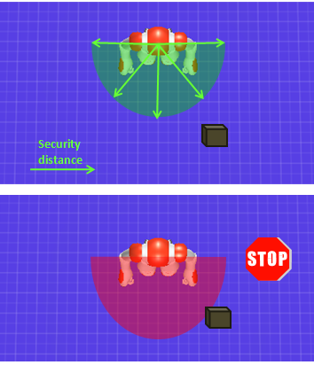

Overview | API
ALNavigation is a first attempt to make the robot go safely to a different pose (i.e. location + orientation). The robot cannot yet avoid obstacles, but it is able to move cautiously, stopping as soon as an obstacle enters its security zone.
It provides an enhanced variant of ALMotionProxy::moveTo(), managing a security distance.
While moving forward, the robot tries to detect obstacles in front of him, using its bumpers and sonars.
As soon as an obstacle enters its security area, the robot stops.
The ALNavigationProxy::setSecurityDistance() allows you to set the radius of the semicircle in front of the robot where obstacles are detected.
Default value: 0.40m.
It is centered on FRAME_ROBOT.
Note that the center of FRAME_ROBOT is not on the surface of the robot, so the distance between, for example the foot of the robot and an obstacle will be smaller than the security distance.
The security distance must be positive, if you try to set a negative distance it will be set to 0.0m.
The navigator has a status to define its current state. See ALNavigation API for ways to access it.
| Value | Meaning |
|---|---|
| 0 | Going to target |
| 1 | Target reached |
| 2 | Target unreachable |
The most straightforward way to start using ALNavigation is:
from naoqi import ALProxy
# Set here your robot's IP.
ip = "<your_robot_ip_address>"
navigationProxy = ALProxy("ALNavigation", ip, 9559)
# No specific move config.
navigationProxy.moveTo(1.0, 0.0, 0.0)
navigationProxy.moveTo(1.0, 0.0, 0.0, [])
# To do 6 cm steps instead of 4 cm.
navigationProxy.moveTo(1.0, 0.0, 0.0, [["MaxStepX", "0.06"]])
# Will stop at 0.5m (FRAME_ROBOT) instead of 0.4m away from the obstacle.
navigationProxy.setSecurityDistance(0.5)
Enter search terms or a module, class or function name.